S2FunHarmonic
S2FunHarmonic is the heart of S2Fun, therefore much effort is put into its functionality.
In the first part we will cover how to deal with univariate functions of the form
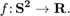
Defining an univariate S2FunHarmonic
Definition via function values
At first we need some vertices
nodes = equispacedS2Grid('resolution',3*degree,'antipodal'); nodes = nodes(:);
next we need to define function values for the vertices
y = S2Fun.smiley(nodes);
% plot the discrete data
plot(nodes,y)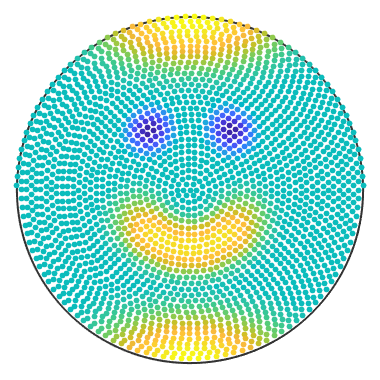 Finally the actual command to get sF1 of type S2FunHarmonic
sF1 = interp(nodes, y, 'harmonicApproximation') % plot the spherical function plot(sF1)
sF1 = S2FunHarmonic bandwidth: 48 antipodal: true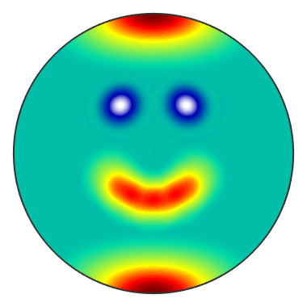
- The bandwidth property shows the maximal polynomial degree of the function.Internally for a given bandwidth there are stored 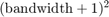 Fourier-coefficients.
- The antipodal flag shows that 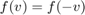 holds for all 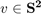 .
For the same result we could also run S2FunHarmonic.approximation(nodes, y) and give some additional options (see here).
Definition via function handle
If we have a function handle for the function we could create a S2FunHarmonic via quadrature. At first lets define a function handle which takes vector3d as an argument and returns double:
f = @(v) 0.1*(v.theta+sin(8*v.x).*sin(8*v.y));
% plot the function at discrete points
plot(nodes,f(nodes))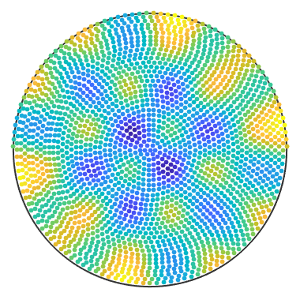 Now we can call the quadrature command to get sF2 of type S2FunHarmonic
sF2 = S2FunHarmonic.quadrature(f, 'bandwidth', 150)
plot(sF2)sF2 = S2FunHarmonic bandwidth: 150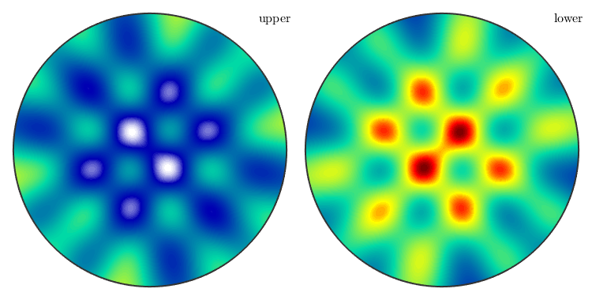
- If we would leave the 'bandwidth' option empty the default bandwidth would be considered, which is 128.
- The quadrature is faster than the approximation, because it does not have to solve a system of equations. But the knowledge of the function handle is also a strong requirement.
- For more options see here.
Definition via Fourier-coefficients
If we already know the Fourier-coefficients, we can simply hand them as a column vector to the constructor of S2FunHarmonic
fhat = rand(25, 1); sF3 = S2FunHarmonic(fhat)
sF3 = S2FunHarmonic bandwidth: 4
Operations
The idea of S2Fun is to calculate with functions like Matlab does with vectors and matrices.
Basic arithmetic operations
addition/subtraction
sF1+sF2; sF1+2; sF1-sF2; sF2-4;
multiplication/division
sF1.*sF2; 2.*sF1; sF1./(sF2+1); 2./sF2; sF2./4;
power
sF1.^sF2; 2.^sF1; sF2.^4;
absolute value of a function
abs(sF1);
min/max
calculates the local min/max of a single function
[minvalue, minnodes] = min(sF1); [maxvalue, maxnodes] = max(sF1);
- as default min or max returns the smallest or the biggest value (global optima) with all nodes for which the value is obtained
- with the option min(sF1, 'numLocal', n) the n nodes with the belonging biggest or smallest values are returned
- min(sF1) is the same as running steepestDescent|(sF1)|
min/max of two functions in the pointwise sense
min(sF1, sF2);
- See all options of min/max here
Other operations
calculate the 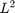 -norm, which is only the 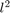 -norm of the Fourier-coefficients
norm(sF1);
calculate the mean value of a function
mean(sF1);
calculate the surface integral of a function
sum(sF1);
rotate a function
r = rotation.byEuler( [pi/4 0 0]); rotate(sF1, r);
symmetrise a given function
cs = crystalSymmetry('6/m');
sFs = symmetrise(sF1, cs);- sFs is of type S2FunHarmonicSym
Gradient
Calculate the gradient as a function G of type S2VectorFieldHarmonic
G = grad(sF1);
The direct evaluation of the gradient is faster and returns vector3d
nodes = vector3d.rand(100); grad(sF1, nodes);
Visualization of univariate S2FunHarmonic
There are different ways to visualize a S2FunHarmonic
The default plot-command be default plots the function on the upper hemisphere
plot(sF1);
- plot(sF1) is the same as contourf(sF1)
nonfilled contour plot plots only the contour lines
contour(sF1, 'LineWidth', 2);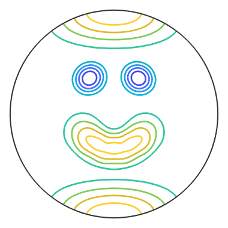 color plot without the contour lines
pcolor(sF1);
3D plot of a sphere colored accordingly to the function values.
plot3d(sF2);

3D plot where the radius of the sphere is transformed according to the function values
surf(sF2);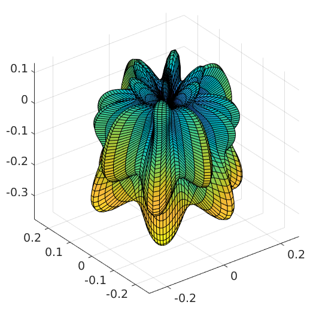
Plot the intersection of the surf plot with a plane with normal vector v
plotSection(sF2, zvector);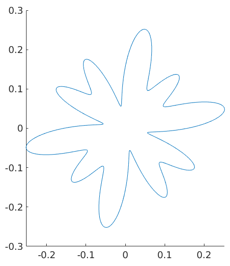
plotting the Fourier coefficients
plotSpektra(sF1);
set(gca,'FontSize', 20);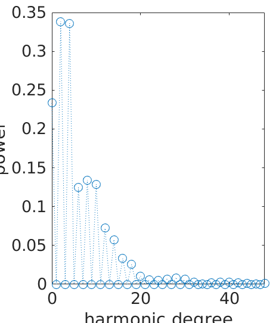
Structural conventions of the input and output of multivariate S2FunHarmonic
In this part we deal with multivariate functions of the form
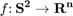 .
- the structure of the nodes is always interpreted as a column vector
- the node index is the first dimension
- the dimensions of the S2FunHarmonic itself is counted from the second dimension
For example we got four nodes 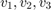 and 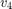 and six functions  and 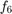 , which we want to store in a 3x2 array, then the following scheme applies to function evaluations:
and 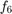 , which we want to store in a 3x2 array, then the following scheme applies to function evaluations:
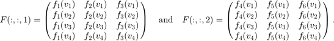
For the intern Fourier-coefficient matrix the first dimension is reserved for for the Fourier-coefficients of a single function; the dimension of the functions itself begin again with the second dimension.
If 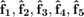 and 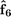 would be the column vectors of the Fourier-coefficients of the functions above, internally they would be stored in 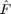 as follows. 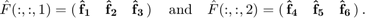
Defining a multivariate S2FunHarmonic
Definition via function values
At first we need some vertices
nodes = equispacedS2Grid('points', 1e5);
nodes = nodes(:);Next we define function values for the vertices
y = [S2Fun.smiley(nodes), (nodes.x.*nodes.y).^(1/4)];
Now the actual command to get a 2x1 sF1 of type S2FunHarmonic
sF1 = S2FunHarmonic.approximation(nodes, y)
sF1 = S2FunHarmonic size: 2 x 1 bandwidth: 224
Definition via function handle
If we have a function handle for the function we could create a S2FunHarmonic via quadrature. At first let us define a function handle which takes vector3d as an argument and returns double:
f = @(v) [exp(v.x+v.y+v.z)+50*(v.y-cos(pi/3)).^3.*(v.y-cos(pi/3) > 0), v.x, v.y, v.z];
Now we call the quadrature command to get 4x1 sF2 of type S2FunHarmonic
sF2 = S2FunHarmonic.quadrature(f, 'bandwidth', 50)sF2 = S2FunHarmonic size: 4 x 1 bandwidth: 50
Definition via Fourier-coefficients
If we already know the Fourier-coefficients, we can simply hand them in the format above to the constructor of S2FunHarmonic.
sF3 = S2FunHarmonic(eye(9))
sF3 = S2FunHarmonic size: 9 x 1 bandwidth: 2
- This command stores the nine first spherical harmonics in sF3
Operations which differ from an univariate S2FunHarmonic
Some default matrix and vector operations
You can concatenate and refer to functions as Matlab does with vectors and matrices
sF4 = [sF1; sF2]; sF4(2:3);
You can conjugate the Fourier-coefficients and transpose/ctranspose the multivariate S2FunHarmonic.
conj(sF1); sF1.'; sF1';
Some other operations
length(sF1); size(sF2); sF3 = reshape(sF3, 3, []);
sum and mean
If we do not specify further options to sum or mean they give we the integral or the mean value back for each function. You could also calculate the conventional sum or the meanvalue over a dimension of a multivariate S2FunHarmonic.
sum(sF1, 1); sum(sF3, 2);
min/max
If the min or max command gets a multivariate S2FunHarmonic the pointwise minimum or maximum is calculated along the first non-singelton dimension if not specified otherwise.
min(sF3);
Remark for matrix product
At this point the matrix product is implemented per element and not as the usual matrix product.
Visualization of multivariate S2FunHarmonic
There are different ways to visualize a multivariate S2FunHarmonic
The default plot-command be default plots the functions on the upper hemisphere
plot(sF1);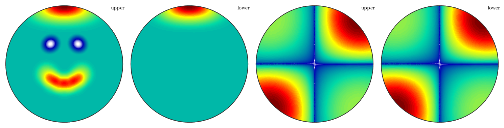
- plot(sF1) is the same as contourf(sF1)
nonfilled contour plot plots only the contour lines
contour(sF2, 'LineWidth', 2);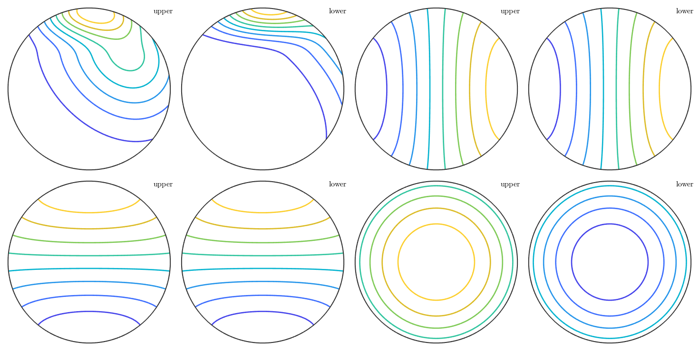 color plot without the contour lines
pcolor(sF3);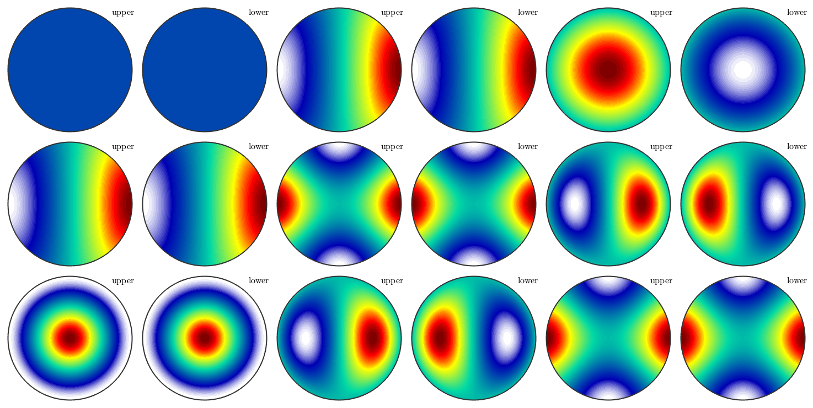
3D plot of a sphere colored accordingly to the function values.
plot3d(sF2);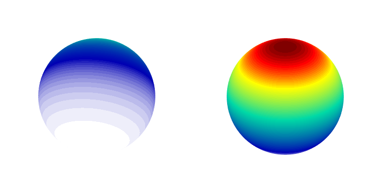
3D plot where the radius of the sphere is transformed according to the function values
surf(sF3);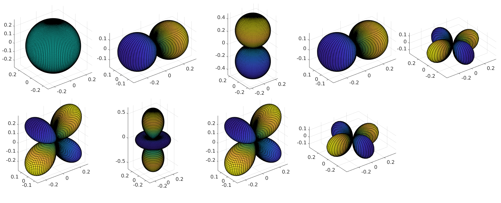
Plot the intersection of the surf plot with a plane with normal vector v
plotSection(sF1, zvector);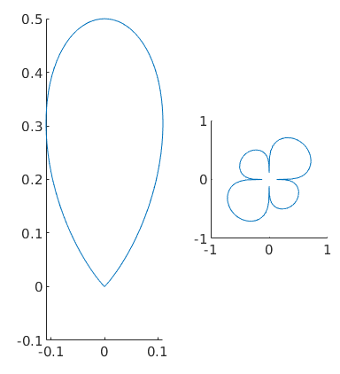
plotting the Fourier coefficients
plotSpektra(sF2);
set(gca,'FontSize', 20);
Complete Function list
| DocHelp 0.1 beta |